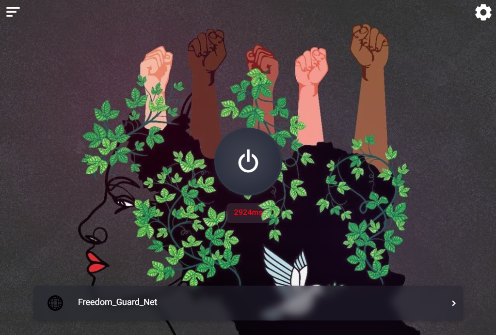
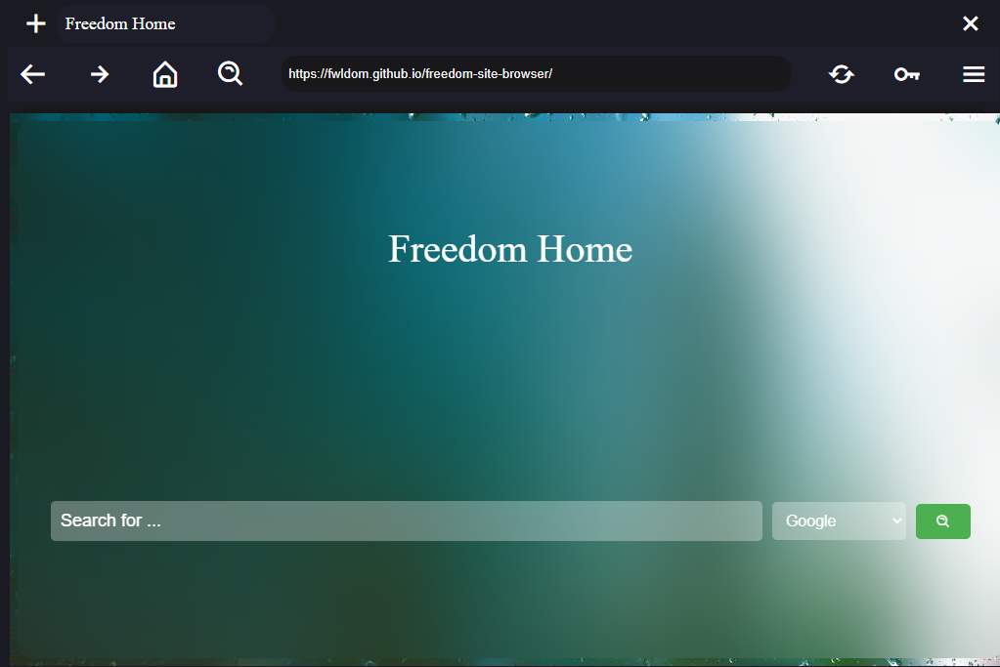

Freedom Warp
Freedom Vibe
Freedom Browser
All in
Freedom Guard


Freedom Guard is a tool to bypass internet censorship. Freedom Guard works on the core of other software such as Warp Plus. Freedom Guard is not just a software, Freedom Guard was created with the aim of free internet and continues
Github RepositoryYou can connect with us through our social platforms. You can also visit the Freedom Guard GitHub project for help and request a pull or issue from there.
GitHub Repository X (Twitter) YouTube Channel Telegram Channel